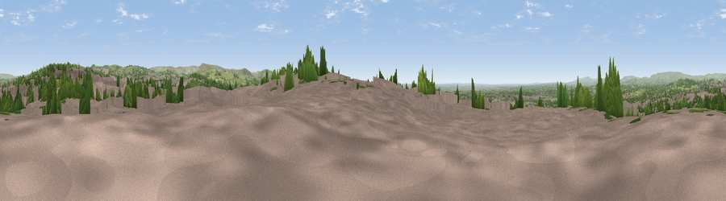

Viewpoint near Oldham
#20970 in England · top 41% of its area beats it · near OldhamThe view, rendered

A 360° render of this exact spot computed from the terrain model, tree cover and land cover — summer colours, afternoon light, calibrated against photographs of famous viewpoints. Real trees, hedges and buildings will differ in detail.
The panorama
Grey silhouette: terrain skyline in each direction (720 bearings, Earth curvature and refraction included). Dashed green: skyline with trees (+15 m) and buildings (+8 m) as obstacles. Blue strip: how far the ground is visible on each bearing.
Where the view opens
Wedge length = distance to the farthest visible ground on that bearing (vegetation-aware). Rings at 10, 25 and 50 km.
What fills the view
58% built-up · 22% woodland · 19% grassland ·
Angular shares of the visible panorama (visual magnitude), not map area. Landscape diversity 0.44 (0–1 Shannon).
Key numbers
More beautiful places nearby
The staircase of upgrades: each row has a higher view potential than everything closer. Driving times are estimates from straight-line distance, calibrated against real road routing — check an actual route before setting out.
| Place | Direction | Drive | Score |
|---|---|---|---|
| Viewpoint near Lees | NE · 4 km | ~9 min | 60.2 |
| Viewpoint near Scouthead | ENE · 4 km | ~10 min | 69.0 |
| Holly Bank | ESE · 5 km | ~11 min | 72.4 |
| Viewpoint near Shaw | NE · 5 km | ~12 min | 72.9 |
| Viewpoint near Carrbrook | ESE · 8 km | ~15 min | 74.0 |
| Viewpoint near Carrbrook | ESE · 8 km | ~17 min | 77.1 |
| Viewpoint near Edenfield | NW · 17 km | ~30 min | 77.5 |
| White Brow | WNW · 27 km | ~43 min | 82.9 |
53.53596, -2.12331 · source: screening · position refined by local search. Computed location — check access rights before visiting.